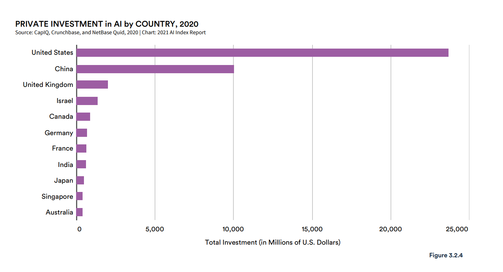
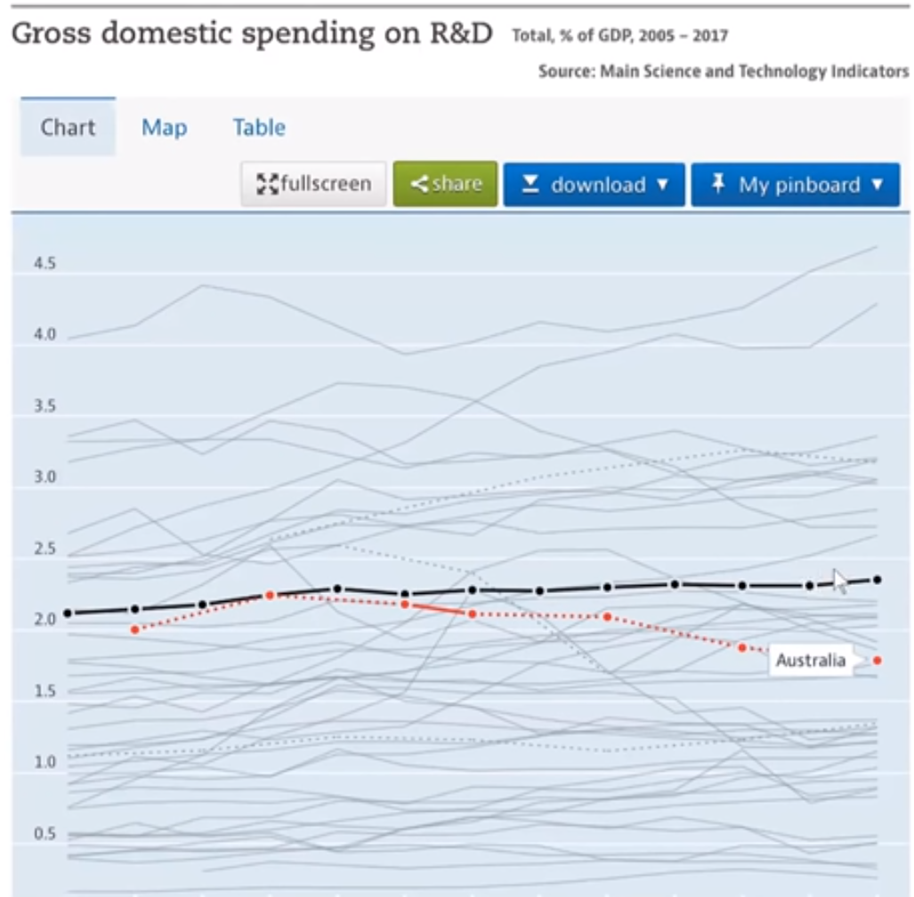
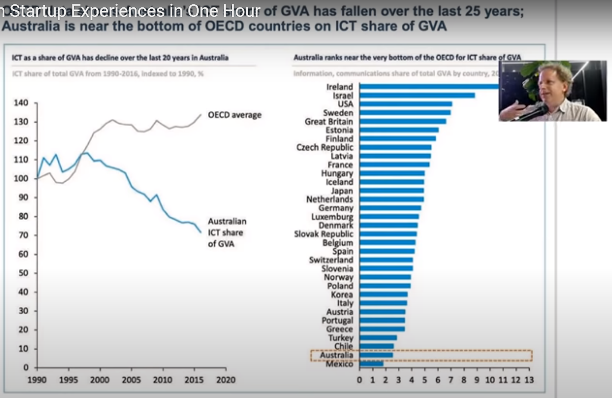
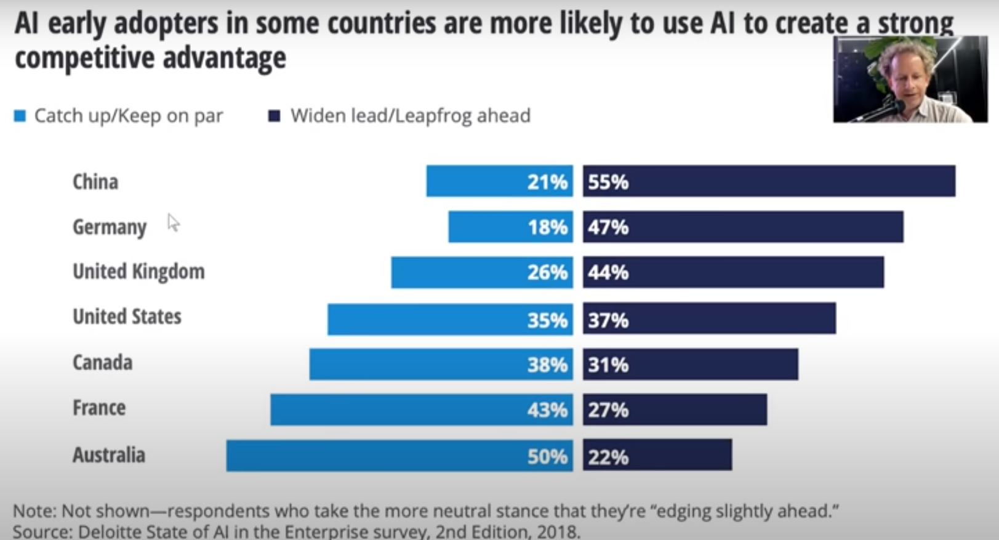
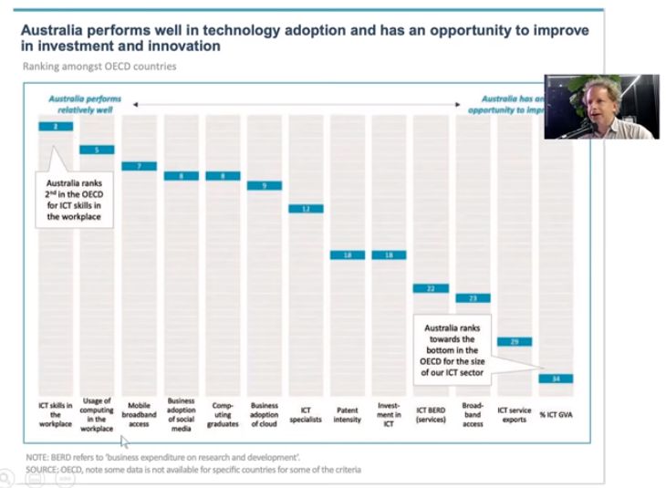

“Did you know that Australia’s investment in AI was only 0.29% of the total investment in AI in 2020? This must explain the sad state of things here in Australia when it comes to AI and tech startup scene, and yet, Jeremy Howard thinks that Australia is a great place to start a tech startup!”
I am based in Sydney but flew to Brisbane to be a part of - Open Q&A with Jeremy Howard (of Fast.ai, Masks4All, Enlitic, Kaggle, FastMail), which was meant to be a live Q&A session with Jeremy. But, to my surprise, it rather turned out to be a talk by Jeremy where he not only shared his experience of founding/co-founding multiple tech startups - Fastmail, Optimal Decisions Group, Enlitic, Kaggle & fast.ai - and that of having lived in the SF bay area for around 10 years, but also shared some alarming data points about the state of AI in Australia today.
Here are some key points that were discussed: - As per Stanford’s Artificial Intelligence Index Report 2021 - Australia invested around 0.29% of the total global AI investment in 2020. - Seed & angel investment per capita in Australia is an order of magnitude behind the US and has fallen for the past three years. [reference] - There is a lack of investment in research in Australia - it was less than the OECD average for the years 2005-2017. [reference] - Australian ICT share of global value added to the economy has fallen for the last 25 years and today, it is near the very bottom of the OECD behind Chile, Turkey, and other countries. [reference]
And yet, despite the obvious issues, Jeremy thinks that Australia is a great place to start a tech startup - we’ll see in this blog how he comes to that conclusion.
NOTE: The talk is available on Youtube here. All data points and charts presented were shared with Jeremy by Michael Evans.
Throughout this blog, you will also find text that starts with "AA:" - these are my learnings and experiences that I share with you. The rest of this blog is the summary of the talk by Jeremy.
1 Australia invested a meager 0.29% of the total global investment in AI in 2020
The talk began by stating a very scary statistic from Stanford’s Artificial Intelligence Index Report 2021 - “Australia invested a meager 0.29% of the total global AI investment in 2020”.

But, even after this, Jeremy starts by making an argument - “Australia is a great place to start a tech startup or do AI research despite the obvious issues”.
Interesting, right?
2 Don’t listen to old people
Jeremy started his journey in consulting at Mckinsey & Company to learn about business and he also worked at other consulting companies along the way. This helped him learn some valuable skills around - “how to influence people” & “how to influence organizations” but the actual feedbacks on his initial ideas weren’t very positive.
When he first presented an idea about building dynamic websites using collaborative filtering to one of the directors at a consulting firm, the feedback he received was this - > You have no idea how companies work. This isn’t a company. Companies are about competition, about market forces. This is nerdy technology.
He had similar feedback the second time around too for a different idea on using algorithms to find interesting websites based on user’s history.
So, based on his overall experience of learning business, he had his first piece of advice for potential people planning on doing tech startups -
Don’t listen to old people. Unless, it’s explicitly about the thing that “you” want to do and they have years of experience doing that thing in the way “you” want to do it. Otherwise, “you” get these biases about business as usual without the status quo.
3 In Australia, don’t try to be an Australian company
After his initial gig at consulting which lasted around 10 years, Jeremy founded not one but two startups within 1 month of each other: 1. Fastmail 2. Optimal Decisions Group
As someone with a background in consulting, he didn’t know much about the Australian startup scene - and thus, didn’t have any government funding or grants. These were companies weren’t Australian startups but rather startups that happened to be in Australia!
He mentioned that since he had more access to global customers than Australian customers, it never occurred to him that these companies were bounded by geographical boundaries. These were two companies that were competing on a global stage!
AA: I found this bit to be really interesting, as I also work for a similar company that I believe is also competing on a global stage - Weights & Biases. Even though the company was founded in San Francisco, it has clients worldwide. It’s solving problems that benefit the world and not just the US in general. Could this be the secret for founding successful startups?
4 To be a tech founder requires this weird combination of great humility and arrogance
For the next startup that Jeremy co-founded alongside Anthony Goldbloom - Kaggle, they went to San Francisco to try and get funding.
Jeremy stated: > “With Kaggle we decided to try a different approach which was to get VC funding. I said to Anthony who we’re doing this with, let’s not even try to get funding in Australia because Australia doesn’t fund tech startups. The amount of funding of startups in Australia in a year is less than the amount of funding of startups in the US in a day. So we went to San Francisco to try and get funding.”
In San Francisco, Jeremy had a very different experience than that in Australia. He shared examples of how Mark Andreson and Vinod Khosla were ready to invest five million dollars when in fact, he had initially thought to seek five hundred thousand dollars of funding. He observed a very different theme in the bay area, which was, quote:
Every time we’d say we want to do
X, people would say “Woah, okay, that’s great. What if you could make an even biggerX”?
This was a very different experience from what Jeremy had found doing his startups in Australia: > Oh, I am trying to create an email company that does like synchronized email and I am trying to sell it on the internet and almost everybody would say like “Why”? Microsoft & Yahoo already have an email service. Obviously, there is no chance you can beat them, so why are you doing this? Is there something smaller you could do?
Jeremy said: > “To be a tech founder requires a whole lot of arrogance. You need the arrogance to believe that you can build something that other people are going to want to buy and the other people that will come along and compete with you won’t do as good as you, and you can win! But you also need the humility to recognize that other people come along and they can have some better ideas than you so sometimes you should borrow those ideas, or sometimes you should try and find ways to do it better. So it requires this weird combination of great humility and arrogance.”
Jeremy also compared Australia to the bay area, below, I summarize:
| US | Australia | |
|---|---|---|
| Theme | What if you could do an even bigger or better “X”? | Is there something smaller that you could do? |
| Cultural difference | Oh, it’s really cool that you’re trying to do something better! | Why aren’t you OK with what’s already there? Why build something new? |
| VCs - Academics | VCs would call academics and ask for their opinion on new ideas. | You don’t see this strong connection between investors and academics. |
5 Moving to San Francisco was interesting
After raising money for Kaggle, Jeremy moved to San Francisco.
In the US, Jeremy was starstruck - he would notice that meetups are hosted at Google or Facebook. He would be one day talking to a Google product manager and would feel very starstruck. But the other thing he noticed was, that while he was talking to these legends, they’re actually “pretty normal”! Jeremy said:
I kind of expected them to be at another level. I felt that as a little Australian nobody, I would just be dominated by these people. But, no! When I compared them to my mates back in Australia, I kind of realized that the Australian talent pool is just fantastic. But, there’s this huge difference in opportunity and belief.
AA: At this point, I have to say that after hearing this, I got very excited! It’s because I remember saying the same thing a few months ago when I was looking for a job in deep learning in Australia! I would compare myself to my friends from university who moved to the US and are now working at giants like Facebook, Google, Microsoft, and because I knew them, I was like they’re no different than me! Then, why in Australia do I “need to have a Ph.D.” to work at these companies? Why can’t I at least be given a chance to interview like my peers in the US? Also, why are there like 5 job vacancies for Amazon in tech here in Australia whereas in India or the US there are 500 if not 5,000? In this process of finding a job, I was only able to find a small handful of companies that were actually using deep learning in their products. I decided to join one of them, and it wasn’t a very pleasant experience. Most if not all of my time was spent on doing software engineering (and not research) until I decided to quit. Finally, like my peers, I also ended up working for a US company.
This experience in the US gave Jeremy more self-confidence as an Australian as he realized that “Australians are not way behind”.
Jeremy also found that folks in the U.S were on the whole bolder and even though they were in the center of the world’s biggest marketplace, they were still actually more global! He stressed that “We need that attitude in Australia”.
6 Around 2012, I started noticing deep learning starting to win things
In this part of the talk, Jeremy shared about the way he felt and still feels about deep learning.
Since Jeremy was a chief scientist and president at Kaggle, he got to validate the winning solutions. So, he was always really seeing what are the actual best ways to do things.
And around 2012, Jeremy started noticing deep learning to win things or at least do pretty well! But, one of Jeremy’s real concerns was, quote: > People using these neural nets were all the same person. They were from 1 of 5 universities that were all very exclusive. They were all white, they were all male and they were all solving stupid problems like trying to find their cats in their photos. I mean look okay it’s nice to find cats in your photos, people make a lot of money from that. But, where were the people trying to deal with global water shortages or access to education or dealing with huge economic inequity - it wasn’t on the radar.
Jeremy said that he knew that this was because it wasn’t a diverse set of people solving the problems. He felt that perhaps there is something he could do about this.
He shared that he feels about deep learning to be a fundamental technology like “electricity” and also shared examples to showcase the power of what deep learning can do today by showing DALL-E from OpenAI and AlphaFold from Deepmind.
Below, I also share DALL-E from OpenAI which is a deep learning model, that can generate images given some text input:
To someone who doesn’t know what’s going on, this feels like “magic”. Jeremy said that there are people who feel like deep learning is some technology on another level that only a select people can do. And he completely disagrees with this.
Jeremy also mentioned that deep learning is just kind of one algorithm with little changes that go between one model and another. When Jeremy looked at the source code for the AlphaGo model, he found that the model was almost identical to the computer vision object recognition models that Jeremy had previously used.
7 No one was doing deep learning in medicine
Jeremy realized that there actually was some low-hanging fruit at that time with deep learning and it was actually “medicine”. He said: > No one was doing deep learning in medicine.
He found that, globally, there is such a shortage of medical specialists and doctors, that, according to the world economic forum, it’s going to take 300 years to fill in the gap to allow the developing world to have access to the same, medical expertise as a developed world.
Stunned by this statistic, Jeremy thought maybe there is something he could do to help the doctors be more productive by adding deep learning to their workflow. He, along with three others, spent 4 weeks training a deep learning model on lung CT scans which, to their surprise, turned out to have much lower false positives and false negatives when compared to a panel of 4 radiologists.
This turned out to be his next startup called Enlitic. Jeremy mentioned that this turned out to be both great and disappointing. It turned out great because as he had envisioned, it helped put deep learning on the map for medicine and it is now everywhere in radiology. But, he still felt he was doing so little when there were so many other problems to be solved.
8 To do deep learning, you “don’t” need a P.h.D
Jeremy felt that there are all these wonderful people in the world solving important problems like disaster resilience, or access to food and they don’t have a way to tap into this extremely powerful tool - “deep learning”.
Jeremy said: > So between this and this kind concern about inequality, and the kind of exclusivity and the kind of homogenous group of people working on deep learning, Rachel and I decided to start something new - fast.ai.
Jeremy also said: > fast.ai is all about helping everybody do what Enlitic is doing but not having a bunch of deep learning people do it, but to have disaster resilience built by disaster resilience people and have oncology stuff built by oncology people.
AA: And I am so glad for the fast.ai course! Had it not been for fast.ai, I believe I would have paid a fortune to learn deep learning and it would possibly have taken me a lot longer to understand the technology. I recently also wrote a tweet about “Why I blog” which included how fast.ai was at the center of all my learnings. So, thanks Jeremy and Rachel for doing this! For those of you that don’t know about fast.ai, it’s most notably known for the fastai library and the fast.ai course, which is based on a top-down approach where you build image classification models first without actually understanding how they work. Then, you slowly go into the details until you know everything that there is to know. This approach just works!
Jeremy also mentioned that through fast.ai, they’ve till date trained hundreds of thousands of people, and every few days people share how fast.ai has helped them publish new papers in a top journal, get a job or bring deep learning to their respective startups.
AA: This is wonderful to hear as I am also definitely one of those people who have greatly benefited from the fast.ai course.
9 Suprised at how little had changed in Australia
A few months ago, Jeremy came back to Australia and mentioned that coming back to Australia has been “amazing”!
For those of you that don’t know, Jeremy grew up in Australia. And he mentioned that having lived in Australia his whole life, he kind of always had this vague sense that Australia had a great working culture, and after spending 10 years in America, ” coming back to Australia was like this huge breath of fresh air”.
But, Jeremy was also surprised at how little had changed since he had left. He was trying to find people doing world-class deep learning research or building startups having a huge global impact and he wasn’t able to find it. He also presented some alarming data and charts related to this that were shared with Jeremy by Michael Evans:

As can be seen from figure-3 above, from an investing point of view, the seed of angel investment in Australia per capita is an order of magnitude behind the US. This basically means that tech founders and entrepreneurs in Australia have 10 times less money per person compared to their peers in the US in terms of early seed investment! This makes it really hard for entrepreneurs in Australia to get things going.
Similarly, he also shared some more data on investment activity and lack of investment in research. In Australia, the average investment activity in AI averages around $20M a year.
Contrast this with Japan’s 2018 AI budget totalled which totalled $1 billion, Singapore’s five-year funding at $151 million, Taiwan’s annual budget for the Taiwan AI action plan at $448 million, France’s $2.4 billion allocation toward AI. Also, while the US strategy does not provide a federal number on investment, the nation had $8.3 billion in AI VC investment in 2017, unclassified AI R&D by the federal government reached $2.19 billion in the same year (up 40% from 2015), MIT’s $1.38 billion AI centre, DARPA invested $2.8 billion in AI, and the National Science Foundation provided over $146 million each year in support of AI research. [reference]
As shown in figure-4 below, not only is Australia’s investment in research compared to OECD average worse, but it is getting worse.

Jeremy also shared that Australia’s ICT share of global value added to the economy has fallen over the last 25 years! As shown in figure-5 below, this ICT share is plumetting and Australia is near the very bottom of the OECD countries, behind Chile, Turkey, and other countries.

Jeremy mentioned that these were data points that reflect what he was seeing - and I have to agree - being in Australia, you do feel that there is this very limited number of people and organizations investing in technology.
Finally, he also presented a Deloitte study as in figure-6 below:

As per this study, on being asked “why are you interested in AI?”, 50% of Australian enterprises said it’s because they want to catchup or keep up and only 22% said that they want to get ahead. This is worse than every other country that Deloitte spoke to.
Jeremy also said: > Australian customers are so conservative, that if you want to sell something to enterprises in Australia, you have to tell them that their competitors have already bought it. If you say “you could use this to power ahead of your field and become a global success story” - they don’t care. I don’t know exactly why this is, but it’s true in the data and it’s absolutely true from all of my experience.
10 Australia ranks right at the top in “use of tech”

Having said that, as shown in figure-7 above, in OECD, Australia ranks at the top in terms of “use of tech”!. And yet, Australia ranks right at the bottom when in terms of investment in technology.
And this is actually why Jeremy thinks Australia is a great place to build a startup. Jeremy said: > If you can get past all this stuff pulling you down, in Australia, you’re in a place where you’re surrounded by brilliant people. They don’t have other cool tech startups on the whole. It’s not that there’s none, but relatively very few.
Jeremy said that he believes there are some great opportunities here in Australia and also shared some advice for building a tech/AI startup: > Do it in as un-Australian a way as possible: “you” don’t have to have Australian investors or customers. Just believe that “you” can put something on the internet that people are going to buy.
Jeremy feels that this is the secret to having some great startups in Australia and also ended the talk by sharing an example of how things are starting to change in Adelaide.
Lastly, Jeremy said: > The most important thing is the kind of raw foundation that we have which I think is kind of the best in the world. We want to help in any way we can to change Australia from a diamond in the rough to a glowing diamond that everybody around the world knows about.
11 The end
AA: As someone who was in the audience, I must say it was quite a pleasure to hear Jeremy share his journey. There’s plenty in there to learn from and I am glad I got to witness it live and also got a chance to meet him. I am also secretly very happy that he’s in Australia and hope that this will change the state of AI investment here. I am also happy to do my bit and help in any way I can.